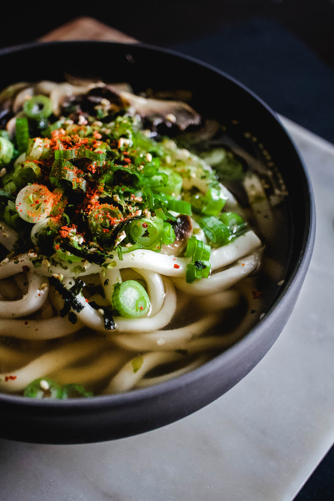

お品書き
アクセス
お知らせ
お品書き
アクセス
お知らせ

コシ、ノビ。探求の先に見つけた、
店主こだわりの麺。
本格的な香川の讃岐うどんが、福島でも食べられます。
材料からこだわり抜いたうどんを、どうぞご賞味下さい。
店主 ✕✕✕✕
お品書き
うどん
材料や粉出しは
全て神奈川県残のものを使用しています。
トッピング
お好みの味に
カスタマイズ可能です。
サイドメニュー
唐揚げ、天ぷらなど、
豊富なサイドメニューをご用意しております。
アクセス
店名
おいしいうどん
住所
福島県○○市○○区
✕✕✕✕✕✕
電話
✕✕－✕✕✕✕－✕✕✕
営業時間
11:00～22:00（L.O.21:00）
（毎週火曜日は定休日となります）
座敷
10席程度
お知らせ
新型コロナウイルス蔓延防止対策について
Go To Eat お食事券について
全て見る